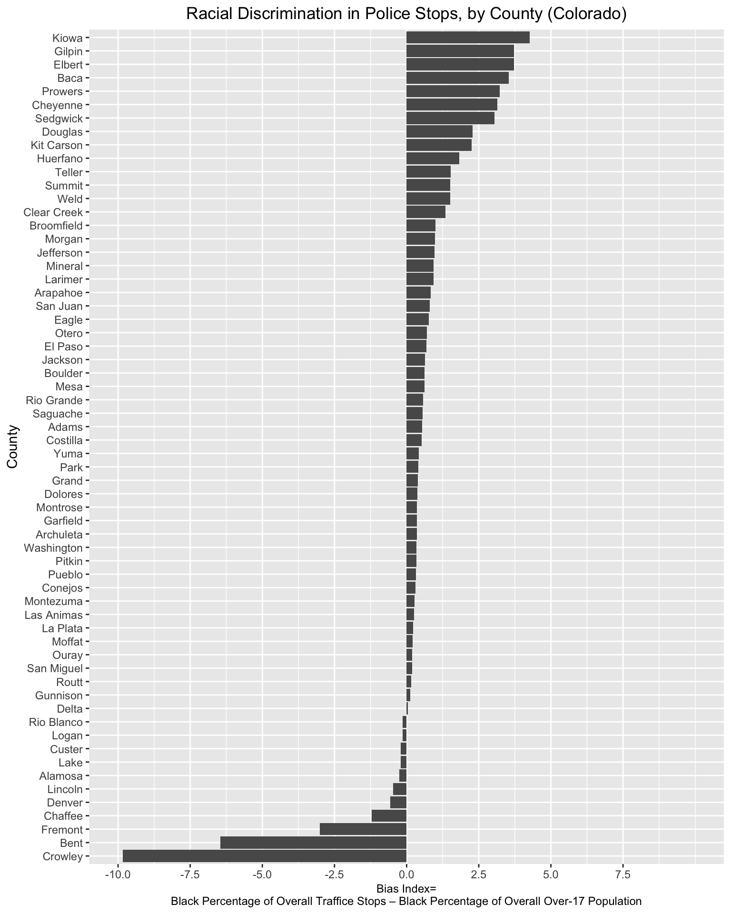

5 Define an index of racial bias in traffic stops
5.1 Read in and join 2010 census data to co_county_black_stops
Read in census data
# Read in census data and assigns to object named "co_counties_census_2010"
co_counties_census_2010<-read_csv("https://www.dropbox.com/s/kq94707fmcdbc0w/co_county_decennial_census.csv?dl=1") ##
## ── Column specification ─────────────────────────────────────────────────────────────────────────────────────────
## cols(
## GEOID = col_character(),
## County = col_character(),
## total_pop = col_double(),
## total_black_pop_over17 = col_double(),
## total_pop_over17 = col_double()
## )# Prints contents of "co_counties_census_2010"
co_counties_census_2010## # A tibble: 64 × 5
## GEOID County total_pop total_black_pop_over17 total_pop_over17
## <chr> <chr> <dbl> <dbl> <dbl>
## 1 08023 Costilla County 3524 18 2788
## 2 08025 Crowley County 5823 556 5034
## 3 08027 Custer County 4255 37 3525
## 4 08029 Delta County 30952 139 24101
## 5 08031 Denver County 600158 45338 471392
## 6 08035 Douglas County 285465 2447 198453
## 7 08033 Dolores County 2064 4 1602
## 8 08049 Grand County 14843 43 11825
## 9 08039 Elbert County 23086 122 17232
## 10 08041 El Paso County 622263 27280 459587
## # … with 54 more rows5.2 Join census data to co_counties_census_2010
co_counties_census_trafficstops<-full_join(co_county_black_stops, co_counties_census_2010,
by=c("county_name"="County"))co_counties_census_trafficstops## # A tibble: 64 × 7
## # Rowwise: county_name
## county_name black_stops total_stops GEOID total_pop total_black_pop_over17 total_pop_over17
## <chr> <int> <int> <chr> <dbl> <dbl> <dbl>
## 1 Adams County 1208 34350 08001 441603 9396 315480
## 2 Alamosa County 43 4478 08003 15445 142 11617
## 3 Arapahoe County 1819 17520 08005 572003 40558 424679
## 4 Archuleta County 28 5091 08007 12084 19 9676
## 5 Baca County 61 1511 08009 3788 15 2974
## 6 Bent County 46 1808 08011 6499 486 5403
## 7 Boulder County 192 13053 08013 294567 1961 231813
## 8 Broomfield County 22 1095 08014 55889 415 41237
## 9 Chaffee County 37 6521 08015 17809 264 14821
## 10 Cheyenne County 38 1106 08017 1836 4 1386
## # … with 54 more rows5.3 Define the variables that will be used in the bias index
co_counties_census_trafficstops<-co_counties_census_trafficstops %>%
mutate(black_stop_pct=((black_stops/total_stops)*100),
black_pop_pct=((total_black_pop_over17/total_pop_over17)*100))co_counties_census_trafficstops## # A tibble: 64 × 9
## # Rowwise: county_name
## county_name black_stops total_stops GEOID total_pop total_black_pop_ove… total_pop_over17 black_stop_pct
## <chr> <int> <int> <chr> <dbl> <dbl> <dbl> <dbl>
## 1 Adams County 1208 34350 08001 441603 9396 315480 3.52
## 2 Alamosa County 43 4478 08003 15445 142 11617 0.960
## 3 Arapahoe County 1819 17520 08005 572003 40558 424679 10.4
## 4 Archuleta County 28 5091 08007 12084 19 9676 0.550
## 5 Baca County 61 1511 08009 3788 15 2974 4.04
## 6 Bent County 46 1808 08011 6499 486 5403 2.54
## 7 Boulder County 192 13053 08013 294567 1961 231813 1.47
## 8 Broomfield County 22 1095 08014 55889 415 41237 2.01
## 9 Chaffee County 37 6521 08015 17809 264 14821 0.567
## 10 Cheyenne County 38 1106 08017 1836 4 1386 3.44
## # … with 54 more rows, and 1 more variable: black_pop_pct <dbl>5.4 Calculate the bias index
co_counties_census_trafficstops<-co_counties_census_trafficstops %>%
mutate(excess_stops_index=black_stop_pct-black_pop_pct)co_counties_census_trafficstops## # A tibble: 64 × 10
## # Rowwise: county_name
## county_name black_stops total_stops GEOID total_pop total_black_pop_ove… total_pop_over17 black_stop_pct
## <chr> <int> <int> <chr> <dbl> <dbl> <dbl> <dbl>
## 1 Adams County 1208 34350 08001 441603 9396 315480 3.52
## 2 Alamosa County 43 4478 08003 15445 142 11617 0.960
## 3 Arapahoe County 1819 17520 08005 572003 40558 424679 10.4
## 4 Archuleta County 28 5091 08007 12084 19 9676 0.550
## 5 Baca County 61 1511 08009 3788 15 2974 4.04
## 6 Bent County 46 1808 08011 6499 486 5403 2.54
## 7 Boulder County 192 13053 08013 294567 1961 231813 1.47
## 8 Broomfield County 22 1095 08014 55889 415 41237 2.01
## 9 Chaffee County 37 6521 08015 17809 264 14821 0.567
## 10 Cheyenne County 38 1106 08017 1836 4 1386 3.44
## # … with 54 more rows, and 2 more variables: black_pop_pct <dbl>, excess_stops_index <dbl>5.5 Visualize county-level variation in the bias index using ggplot
co_counties_census_trafficstops<-co_counties_census_trafficstops %>%
mutate(County=str_remove(county_name, " County"))bias_graph<-co_counties_census_trafficstops %>%
drop_na(excess_stops_index) %>%
ggplot()+
geom_col(aes(x=reorder(County, excess_stops_index), y=excess_stops_index))+
coord_flip()+
labs(title="Racial Discrimination in Police Stops, by County (Colorado)", x="County", y="Bias Index=\nBlack Percentage of Overall Traffice Stops – Black Percentage of Overall Over-17 Population")+
theme(axis.title.x = element_text(size = 9))+
scale_y_continuous(breaks=c(-10, -7.5, -5, -2.5, 0, 2.5, 5, 7.5))+
expand_limits(y=c(-10,10))+
theme(plot.title=element_text(hjust=0.5)) bias_graph